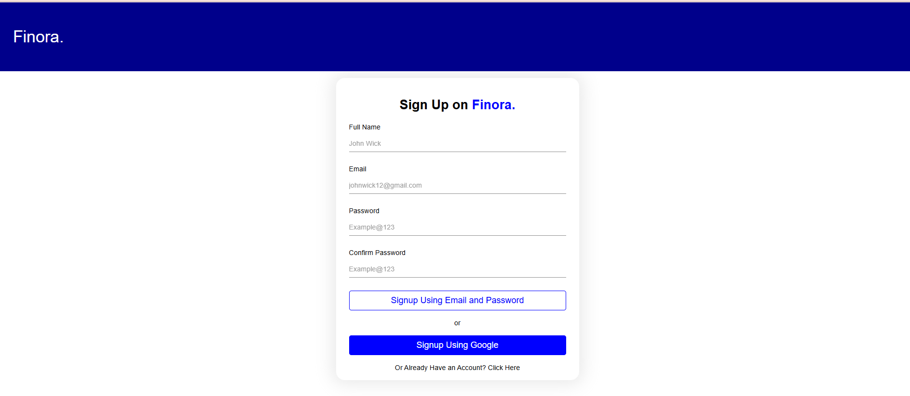

Introducing my revolutionary music app, designed to elevate your listening experience like never before. With a custom-made song player that seamlessly adapts to the context of your music journey, whether you're exploring liked songs, curated playlists, or diving into the discography of your favorite artists, every moment becomes tailored to your preferences. Say goodbye to the frustration of forgetting song names with our Shazam-like AI feature, allowing you to effortlessly identify tracks simply by listening to a snippet. But it doesn't stop there—our app empowers you to curate your own musical universe with the ability to like songs, creating a personalized library that reflects your unique taste. And with AI-based song suggestions, discover new favorites that resonate with your musical palette, expanding your horizons with every play. Dive deeper into the world of artists with our dedicated Artists page, where you can explore biographies, discographies, and exclusive content, forging a deeper connection with the music and musicians you love. Join us on a journey where every note is perfectly tuned to your desires, making every listening moment unforgettable.
2023
5 Months